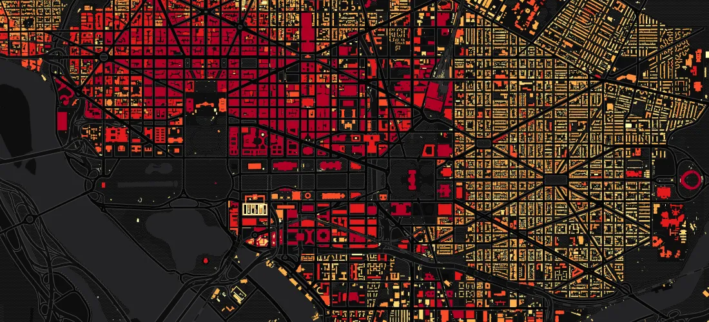

Published on , by Matt Stiles, August 19th 2016, 4:35:27 am

I posted yesterday about residential buildings in Seoul and South Korea. Here’s a quick look at the buildings in my previous city, Washington, D.C. Darker shades represent taller buildings: